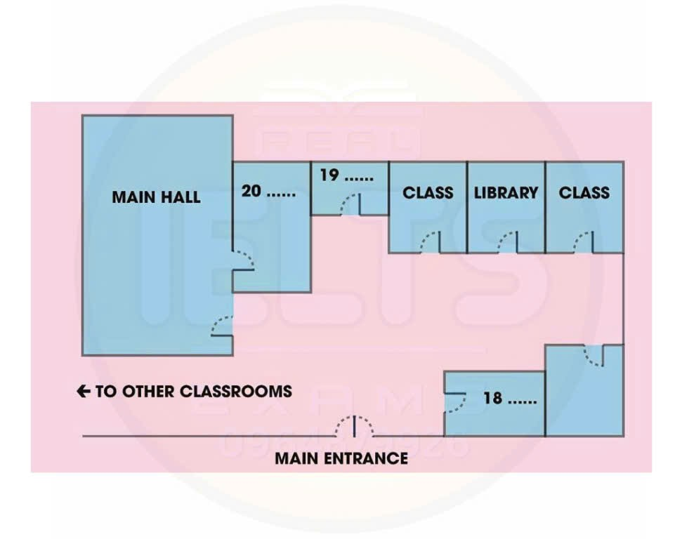

Phiếu trả lời Listening
Bấm số câu để nhảy tới câu đó. Bài làm được tự lưu trên máy này. Thời gian thi thật: khoảng 30 phút.
PART 1 Questions 1–10
Complete the sentences below.
Write NO MORE THAN THREE WORDS AND/OR A NUMBER for each answer.
Example: Jim wants to find out about a room.
Jim's weekly rent will be $
Jim can park his car in the
The telephone is in the
Jim will bring a for his bedroom.
Peter would like Jim to bring a
Peter and Jim will probably watch TV on
Jim works in a twice a week.
Peter will share the cost of with Jim.
Peter wants Jim to move in by
Jim agrees to move in after his
📜 Lời thoại Part 1
Now turn to section one on page two of your question booklet. Section one. You will hear two students called Peter and Jim talking about sharing a house together.
First, you have some time to look at questions one to five on page two. You will see that there is an example that has been done for you. On this occasion only, the conversation relating to this will be played first.
Hi, I'm Jim. I'm here about the room. Hi, I'm Peter.
We talked on the phone, didn't we? Come on in. Great. I just need to find out a few things before I make up my mind.
Jim is here to find out about a room, so room has been written in the space. Now we shall begin. You should answer the questions as you listen because you will not hear the recording a second time.
Listen carefully and answer questions one to five. Hi, I'm Jim. I'm here about the room.
Hi, I'm Peter. We talked on the phone, didn't we? Come on in. Great.
I just need to find out a few things before I make up my mind. Okay. Well, first of all, I wasn't quite clear about the rent.
It depends on the room you have. I have the large bedroom, so I pay $110 a week. Yours is $80 because it's a bit smaller.
That's not too bad. The last place I was in was $100 a week and it was much smaller. And it seems like a good location.
Yeah, and the shops are pretty close. The only thing is it's not very good for public transport. The nearest bus stop is quite a walk.
That's not a problem. I've got a car. By the way, is there anywhere I can park? Well, you're lucky because this house has a garage.
At the moment there are some empty boxes in there, but there's still plenty of room for your car. You can't park in the street, it's zoned no parking, and the back lane is too narrow. Fine.
Now, what about phone calls? I didn't see a phone in the hall when I came in. I've got a mobile which my friends usually call me on, but a phone in the house is useful. Yeah, it's in the kitchen.
It was in the living room, but it was hard to hear over the television. Oh, and we pay for our own calls. That's fair enough.
And what about my room? Yes, we'll go up and look in a minute. It's at the front of the house. It's a nice room and there's a cupboard and desk in there already.
But it does get quite cold at night in that room and it doesn't have a heater. No problem. My friend has just given me one, so I'll bring that.
He's gone travelling and has left me with a big box of things to mind. Anything else I can bring? Well, we've just got a microwave and my mother bought me a rice cooker, but it would be great if you had a toaster. Mine's just broken.
I'll have a look in the box. Before you hear the rest of the conversation, you have some time to look at questions 6 to 10 on page 2. Now listen and answer questions 6 to 10. One thing.
I'm a keen sports fan and I usually watch the game on TV on Friday evening. Would that be OK? Me too, so that's good. And I work at the supermarket on Tuesday and Thursday nights.
Great. You can do the shopping then. Do you have most of your lectures in the morning or afternoon? In the afternoons.
Why? Mine are in the afternoons too. You could give me a lift. We can share the petrol.
Good idea. When do you think I could move in? Well, if you're interested and the rent is OK, I need someone by the 1st of June when the new rent period starts. Yes, that should be fine.
The house seems big enough. The rent's reasonable. I've got an exam next week, so I'll move in after that if that's OK.
Yeah, that sounds fine. That is the end of section 1. You now have half a minute to check your answers.
PART 2 Questions 11–20
Questions 11–17
Complete the sentences below.
Write NO MORE THAN THREE WORDS AND/OR A NUMBER for each answer.
Spring Down Junior School
The school day starts at with registration, and finishes at 4 p.m.
The school canteen offers a for lunch.
The morning and afternoon breaks each last for
On Thursday afternoons all children must take part in
Every term the children do a special
The children are given tests each
The children can go to after school to learn new skills such as music.
Questions 18–20
Label the plan below.
Write the correct letter, A, B, C, D, E, G or H, next to Questions 18–20.

A music room
B assembly hall
C computer room
D cloakroom
E Head's office
G gym
H reception
18
19
20
📜 Lời thoại Part 2
Now turn to section 2 on page 3. Section 2 You will hear a teacher giving a talk about a junior school to a group of parents.
First you have some time to look at questions 11 to 17 on page 3. Now listen carefully and answer questions 11 to 17. OK. Can everybody hear me? Good.
Well, I'd like to welcome all the new parents to Springdown Junior School. My name is Anne Rawson and I'm the assistant head teacher. What I'd like to do is tell you about the school day and show you round the school and perhaps you can ask me any questions you may have at the end.
Right. First of all, let me start by telling you a little bit about what happens here and what's on offer. Children are expected to arrive at school between 8.45 and 8.50 and the bell is rung for everybody to go to their classrooms at 8.55 so that we can take the register.
We then have assembly at 9.00 when the whole school meets in the hall for the head to talk to the children. He may discuss what's happened in the news or something that is important for the school. Lessons run until 4.00pm with an hour for lunch.
Lunch is served in the canteen and children can bring their own packed lunch or a hot meal is available. They also have time to play outside and get some fresh air. In the middle of the morning and the middle of the afternoon, there are two breaks of 15 minutes when the children also generally go outside, unless it's wet.
Now, we encourage the children to do as much as they can and we offer them several ways of achieving this. For example, on Thursday afternoons, rather than continuing with lessons, we expect the whole school to do sports. We vary these between summer and winter and everything is supervised by the teachers.
Also, we like the children to work on something artistic over a long period of time. So, for each of the three terms, they are expected to produce a poster. This will normally be on something particular that they have studied that term, such as the environment.
We also make sure we keep a close eye on how each child is doing in their schoolwork and every month, rather than the teacher giving the children a report, as I know some schools do, they have to do tests and we record their performance over the year. We are very proud of our school and of the very good results we achieve. Our teachers are all very committed to the school and at the end of the school day, many of them have set up clubs that the children go to for an extra hour to learn a new skill, such as music.
Before you hear the rest of the talk, you have some time to look at questions 18 to 20 on page 4. Now listen and answer questions 18 to 20. OK, I'll quickly show you where everything is. We're here at the main entrance and on the right, where you would normally expect to find reception, you'll see the Head's office.
He likes to see visitors personally and his door is always open. Opposite this are two of the classrooms, but most of the classrooms are down the long corridor. The library, then, is situated between those two classrooms and we are hoping that we will be able to create a computer room within that so that the children can have somewhere quiet to work on their own.
On the left of the classrooms, we have converted one of the old cloakrooms to create a music room and children can go in there at lunchtime if they want to. Now, if you come with me through the main hall here... OK, now, as you can probably see, this main hall is a new addition this year and we are very pleased with it. We used to be squashed into the old assembly hall next door, which, as you can see, has now been turned into a gym for the children and we have weekly lessons here.
Do feel free to go and look round the classrooms and I'll be waiting here to answer your questions. That is the end of Section 2. You now have half a minute to check your answers.
PART 3 Questions 21–30
Questions 21–24
Choose the correct letter, A, B or C.
Forensic Linguistics
21 What do the students agree about defining forensic linguistics?
22 Jen thinks it will be difficult to analyse the voice recording because
23 Why does Jen think that the 'suspect' might vary their voice patterns?
24 What does Rob think about Jen's approach to study?
Questions 25–26
Choose TWO letters, A–E.
25–26 Which TWO books do Jen and Rob decide to get from the library?
Questions 27–28
Choose TWO letters, A–E.
27–28 Which TWO practical considerations are both Jen and Rob concerned about?
Questions 29–30
Choose TWO letters, A–E.
29–30 Which TWO sections of the project will Rob write alone?
📜 Lời thoại Part 3
Now turn to Section 3 on page 5. Section 3 You will hear two students called Jen and Rob discussing a project they are about to start working on.
First you have some time to look at questions 21 to 24 on page 5. Now listen carefully and answer questions 21 to 24. Hi Jen. Hi Rob.
We need to look at this project we're doing together in Forensic Linguistics. Sure. The first thing we have to do is define Forensic Linguistics.
I thought we could say something like Forensic Linguistics involves the analysis of language and forensic refers to using scientific techniques to solve crimes. So Forensic Linguistics involves analysing people's use of language to find out whether they've committed a crime. What do you think of that as a definition? Sounds OK.
I looked it up in my dictionary and I got something similar. Then we can add something about what Forensic Linguists actually do to back it up. You know, like analysing documents to find out who wrote them.
Good point. Let's do that. What about the actual project? I'm glad we chose voice identification as the topic.
Yeah. We've been given a voice recording of a possible suspect. Not a real suspect of course.
So we've got to listen to the recording and analyse their voice. Should be OK? Well, I've already listened to the recording and I can't even tell if it's a man or a woman. But I guess that doesn't matter.
The accent's a local one, though I'm not sure how that will affect anything. Where we're really going to get in trouble is that the recording is very unclear. I'm sure they've done that to test us.
Well, they weren't going to make it easy. We have to analyse the voice sample with that spectrograph instrument, don't we? Learning what to do with it is the only thing that really concerns me about this project. It'll be fine.
I guess so. We have to interview the suspect and make our own recording face-to-face and decide if it's the same person as on the original recording, right? Yes. It's not an exact science but it's usually pretty accurate.
You can often tell, even when they've got a cold, it's the same person but they might do something like speaking with another accent because the tutor suggests they do that just to test us. So let's get on with it then. Oh, and don't start your usual self-doubt about whether you can do the work or not.
We usually do OK in the end. I reckon that as long as we focus on the main points of the assignment we can think about the finer details later. My problem is creating things to worry about before I've even started.
Before you hear the rest of the discussion you have some time to look at questions 25 to 30 on page 6. Now listen and answer questions 25 to 30. We'll have to do some background reading first. I'll go to the library later and get what we need.
OK. I've already looked at forensics today and it didn't say much about voice identification so we needn't bother with that one. Language and crime looks a bit more promising, doesn't it? I've got that out of the library already so we don't need to worry about borrowing that.
Research methods in forensic linguistics. I guess we ought to borrow that. And voice identification will be a useful one.
I'll borrow that from our classmate George. He won't need it for his project. But we should get out modern forensic techniques.
We need all the help we can get on that subject. OK. That's that sorted out.
Now on to the practical stuff. I'm not sure about how we're going to record the voices. I'm not too good on the technical side of things.
Me neither. We'd better work out what we're doing. At least we get more than one opportunity to speak to the person playing the suspect.
I just hope whoever it is won't make the task too tricky. I'm sure they won't be too hard on us. And as long as we do our research properly it shouldn't be too hard to do the rest of it.
I'm more worried about fitting in the writing up. I know. We've got loads of other assignments to finish as well.
Now, Rob, let's decide how we're going to split the writing between us. Are you any good at introductions? They always seem to let me down. OK.
Leave that to me. Are you OK to do the literature review then? Maybe we should split that part. I don't mind writing the methodology section if you feel comfortable doing the discussion and conclusions.
OK. And we can do the analysis between us as well. Great.
Let's get started. That is the end of Section 3. You now have half a minute to check your answers.
PART 4 Questions 31–40
Complete the notes below.
Write ONE WORD ONLY for each answer.
Dormancy
Organisms enter a state of dormancy, or inactivity, to:
save available
reduce demands on their environment
Value of dormancy
Organisms which become dormant:
can live in conditions which are environmentally
can live in a wider range of places
have less from other animals
Causes of dormancy
changes in temperature and
availability of food, water, oxygen
Dormancy in insects
There may be a in their metabolism (diapause)
Diapause occurs during extreme conditions, or as part of the life cycle
The African lungfish
It buries itself in the and creates a slimy cocoon
Two dangers: and desiccation
Snails
Some close their shells with a membrane during dormancy
Light-coloured shells reflect sunlight and limit
Hibernation
- Only warm-blooded animals hibernate
The Arctic ground squirrel
It hibernates in an insulated, underground
It loses 40% of its weight during hibernation
When it wakes up, the first part of the body to heat up is the
📜 Lời thoại Part 4
Now turn to Section 4 on page 7. Section 4 You will hear a biology lecture on how living things deal with changes in their environment by entering a state called dormancy.
First, you have some time to look at questions 31 to 40 on page 7. Now listen carefully and answer questions 31 to 40. We've been talking about some ways in which plants and animals deal with changes in their environment. And today we'll continue that discussion by looking at dormancy.
First, we'll cover what dormancy is and why organisms become dormant. Dormancy is a state of inactivity that organisms or living things enter when they need to conserve the resources available to them and reduce their demands on their environment. Most major groups of plants and animals have some representatives that can become dormant.
So what is the value of dormancy? To start with, animals that have the ability to become dormant can survive conditions which are stressful in environmental terms. For instance, when lakes, ponds, or rivers dry up, aquatic organisms that have the ability to enter dormancy can survive the drought, while others that cannot do this will die. Another advantage is that creatures that can become dormant in very inhospitable conditions, such as extreme cold, can live in a larger range of places than other organisms.
And because of this, because they can live in places where other animals can't survive, when they are actually active and looking for food, the amount of competition they have to deal with from other creatures is greatly reduced. Let's move on to look at what causes dormancy. There are a number of variables, but the ones that are the most significant are changes in temperature and the amount of light organisms get.
Availability of food, water, and oxygen is also very important. Now we'll explore some specific examples. Let us first look at dormancy in insects.
Insects can experience a reduction in their metabolism, which is a form of dormancy called diapause. In insects, diapause is either a reaction to difficult environmental conditions or a necessary part of the life cycle, such as with butterflies or certain moths. In terms of environment, it's interesting to note that through dormancy insects can survive when it's very cold.
Another creature we'll look at is fish. Fish share the same main environmental causes for dormancy as other creatures, but as one might imagine, they are particularly sensitive to drought. Let's take the African lungfish as an example.
When the water supply is low, the African lungfish burrows deep into the mud. It surrounds itself with a cocoon of slime and remains inactive. While dormant, it faces two dangers.
One is the possibility of starvation, and to overcome this, it relies on fat it has stored up in its body. The other is desiccation or drying up, which is addressed through a reduction in the production of urine. Snails are also known to become dormant.
Some snails seal off their shell with a membrane of dried mucus after settling at their place of dormancy. Other snails do not have this possibility. They trust the protection of their shell.
Snails that remain outside during their dormancy can usually be recognised by a rather brightly coloured shell reflecting the sunlight and so minimising evaporation. That is why in open habitats, banded snails usually have a yellow shell. Probably the most well-known type of dormancy is hibernation, which occurs in warm-blooded creatures during the winter.
We know that warm-blooded animals maintain a regular body temperature. So what's really interesting about hibernators, true hibernators that is, is they can actually adapt to extreme conditions by turning off their internal thermostat, so to speak, and hibernating until conditions improve. Let's examine the behaviour of a true hibernator, the Arctic ground squirrel.
This squirrel digs underground and builds a nest that is insulated. Once in its nest, it curls up into a ball and tucks in its arms, legs, and tail. Its body temperature mirrors the cold of its surroundings.
At this point, the squirrel barely breathes and doesn't react to stimulus in a normal way. During this period of hibernation, the squirrel loses nearly 40% of its weight. The process of awakening for the Arctic ground squirrel takes about three hours.
When this happens, there is a rapid rise in the heartbeat and circulation is affected. The area around the heart warms more quickly than the rest of the animal. And despite the strain of hibernation, within 24 hours of coming out of it, the squirrel's body processes are basically normal.
That is the end of Section 4. You now have half a minute to check your answers. That is the end of the listening test. You now have 10 minutes to transfer your answers to the listening answer sheet.
Phiếu trả lời Reading
Bấm số câu để nhảy tới câu đó. Bài làm được tự lưu trên máy này. Thời gian thi thật: 60 phút.
READING PASSAGE 1 Questions 1–13
You should spend about 20 minutes on Questions 1–13, which are based on Reading Passage 1.
The Baobabs of Madagascar
The ancient baobabs of Madagascar are some of the largest and most distinctive trees in the world, but they face an uncertain future
The island of Madagascar in the Indian Ocean is the best place in the world to see baobabs. These spectacular trees, with their massive trunks and distinctiye horizontal root-like branches, can live over 800 years. Of the eight known species, six are found only there, while a seventh has made its way across the Mozambique Channel from mainland Africa with a certain amount of human help. Some of the most visited and photographed baobabs in Madagascar are at the Avenue des Baobabs in the western province of Menabe, close to the town of Morondava. There, a dozen trees straddle a narrow sandy road, soaring 30 metres into the sky. Known as renala – ‘mother of the forest’ - in the local Malagasy* language, these trees belong to the tallest baobab species in the world: Adansonia grandidieri, named after two great 19th-century French botanists, Michel Adanson and Alfred Grandidier.
Baobabs have religious and spiritual significance for many Malagasy tribes, although the majority of the island’s population will probably never see one – they only grow along the western margin of the island and not in the more populous central highlands. However, as the national tree and the national emblem, the trees are an ideal symbol for increasing awareness not only of the endangered forests, but also of the traditional beliefs of the people who live alongside them. But what does the future hold for the Malagasy baobabs?
The Avenue des Baobabs is something of a contradiction; the ‘natural’ scene that tourists visit is actually man-made. While the trees themselves are natural enough, the surrounding landscape was created by humans. Back in the early 20th century, much of the Morondava plain was cleared for rice and sugar-cane fields. However, many baobabs were spared because they are valuable as a food source and renewable building material, or they simply survived the fires that were set to clear the dry deciduous forest around them. These days many stand alone in fields, a reminder of where the forest once was. But now it seems that even the mighty baobabs are falling down. ‘Every year I see new trees that have fallen,’ says Jim Bond, an ethnobotanist who has studied Madagascar’s baobabs for more than a decade. The exact cause of the falling baobabs is uncertain, but some people think that the water used to irrigate the nearby fields is partly to blame. Baobabs are adapted to the annual wet season, but their roots can’t cope with constantly waterlogged soils. Lone trees separated from the surrounding forest are also susceptible to cyclones, which reach speeds of over 200 kph in the area, and can easily uproot even a 30-metre baobab.
Baobabs elsewhere on the island are also facing a host of threats, with three of the six native species now listed as endangered by the World Conservation Union. David Baum from the University of Wisconsin has spent years researching Malagasy baobabs. ‘The main threat to their survival is land clearance for farming, which probably suppresses regeneration,’ he says. Burning is the usual method of clearing land, and while baobabs have some resistance to this, they will eventually succumb to repeated burning. Human disturbance in the forest, such as logging, is also a problem. This practice may be promoting the rapid spread of shrubby undergrowth, which quickly fills in the bright forest gaps needed for baobab germination. Another problem the trees face is the dispersal of their seeds. Baum suggests that dispersal is being limited by the absence of two large, now extinct animals– a gorilla – sized lemur and the three-metre-tall elephant bird. Passage through the digestive tract of these giant fruit-eating animals probably once played a vital role in the distribution of the renala baobabs in particular.
The Malagasy government is becoming increasingly concerned as the baobab is key to the local tourism industry, and thus to the economy of the island as a whole. But visiting and photographing the solitary trees in the dramatic open landscape at the Avenue des Baobabs isn’t the only way to experience baobabs in Madagascar. Within a few hours' drive of Morondava, three species of baobab can be seen in largely intact, dry forest habitat. Jim Bond has led expeditions of Malagasy and foreign participants to the Mikea forest in the island’s southwest, which is almost certainly one of the least studied and least damaged areas of baobab forest left in Madagascar. On his expeditions Bond works closely with local people to search for, and create maps of baobab distribution. He also plans to compile an illustrated children’s book of the many local folk-tales about the tree, hoping that national and international versions will help to spread the word about how important baobabs are in Malagasy culture. But it’s going to require some swift and coordinated action to ensure that the baobab becomes a symbol of conservation success, rather than a symbol of humanity’s mistakes.
* Malagasy: of Madagascar
Questions 1–6
Choose TRUE if the statement agrees with the information given in the text, choose FALSE if the statement contradicts the information, or choose NOT GIVEN if there is no information on this.
1 All of the baobab species found on Madagascar are unique to the island.
2 Adanson and Grandidier were the first foreign botanists to visit Madagascar.
3 The baobab can be found in most areas of Madagascar.
4 The landscape around the Avenue des Baobabs is the result of agricultural development.
5 The baobab provides useful products for the local people.
6 There is general agreement about the reasons for baobabs falling down.
Questions 7–13
Complete the notes below.
Write ONE WORD ONLY from the passage for each answer.
Baobabs under threat
Reasons why Madagascar's baobabs are declining in number:
Morondava area
trees may be falling down because of from nearby fields
lone trees are at risk from
Forest areas
land clearance: mainly by burning carried out to create space for activity
practice of makes seed germination difficult
disappearance of certain which dispersed baobab seeds
Jim Bond’s efforts to record information about the baobab:
making of areas of relatively undamaged baobab forest
producing a showing importance of baobab in local culture
READING PASSAGE 2 Questions 14–26
You should spend about 20 minutes on Questions 14–26, which are based on Reading Passage 2.
Coins – the first form of money
A Few people pay much attention to coins; we take them for granted. Since the advent of paper currency and the abandonment of a monetary system based on intrinsic of actual value, they have been demoted to the status of change: what is left when you have paid for something with 'paper' money. There is even a belief that they will one day be obsolete, as will paper or plastic notes, and money will at last have achieved the pure status of a mathematical formulation, a system of electronic credits and debits.
B In the modern media environment, the sheer number of visual images is overwhelming, but it makes one stop to think that coins are among the most durable of our artefacts, and future archaeologists will scrutinise coins in order to learn about their distant ancestors. This is exactly the way ancient coins have informed us for over four millennia. There are thousands of different coins, each designed to carry meaning as well as value, tiny but rich sources of documentary evidence about events and cultural attitudes, frequently produced with exquisite craftsmanship.
C Coins in Europe date from 2,500 to 2,700 years ago, and seem to have originated in the ancient kingdom of Lydia, in what is now Turkey. Before coins, trade was based on barter: the direct trade of commodities. Barter required the physical presence of both commodities that were being traded. Metal coins were far more portable, and not subject to the same spoilage on long sea journeys as a commodity like grain might be if it became wet. However, they could also be accumulated, and these hoards could be stolen. Coins were therefore a temptation to criminals. The Greeks, however, were the first to realise the full potential of the new invention. They were a trading people of seafarers. Their civilisation, which was composed of dozens of city-states, was highly decentralised. Despite the potential for theft, the Greeks realised that they could benefit enormously from a system that used coins, because it meant that they no longer had to carry goods with them to barter.
D The value of coins was generally based on the intrinsic value of the metal they were made of. At first this was mostly silver, and this meant that the discovery of silver mines on Greek territory actually increased the quantity of money they could produce. Had the Greek mining been on a larger scale, it could have caused problems similar to those faced by the Spanish centuries later, when so much gold from the New World was brought into their economy that it resulted in serious inflation. One advantage of intrinsic value was that coins could be weighed to determine the amount of metal they contained, so that the only thing an issuing state had to guarantee was the purity of the metal to prevent accusations of fraud and cheating, which could cause fighting and unrest. This was quite difficult to do, especially with coins made of gold, until Archimedes realised that different metals have different weight-volume ratios, and that by measuring the amount of displacement when coins were immersed in water, it was possible to establish whether gold was alloyed with silver.
E All ancient coins were made by hand using engraved metal moulds. Many hundreds of coins were made, and as a result the moulds often cracked and new ones had to be engraved. This explains the endless variety encountered in coins with the same designs because the moulds had to be remade repeatedly, by many different artisans. One of the distinctive features of coins, in fact, is that they are the work of anonymous craftsmen, and yet each coin is an intimate reflection of the character of its city of origin. It was the Greeks who realised that coins could have a double function, as a unit of value and as a symbol of the identity of the city that issued them. The Greek view of life was deeply motivated by a spirit of competition, and coins, which circulated around the trading world, were a way of advertising the qualities of each particular city-state.
F Interestingly, Greek coins from the city of Athens, which was the home of the greatest sculptors of the classical period, seem to have been completely disconnected from the high sculptural tradition. The beautiful features of the city's patron, Athena (with her owl on the reverse of the coin), seem to have been repeated virtually unaltered for many years. Perhaps this was because the Athenian currency had grown increasingly to be the international standard and, like the US dollar today, a uniform design implied integrity.
G One side of a coin was always occupied by the head of a divinity, so it was a relatively small step, at around 323 BC, for Greek coins to replace that head with the portrait of the reigning monarch, a tradition that has continued in monarchies to the present day. Republics may have either symbolic heads – going back to the older tradition of divinities – or the features of a distinguished past head of state. The Romans adopted the Greek practice of coin design and as a result, the features of many great Romans have survived and are known to modern generations, despite the fact that the art of portrait painting was completely lost for more than a millennium following the fall of the Roman Empire.
Questions 14–20
Reading Passage 2 has seven paragraphs.
Choose the correct heading for each paragraph from the list of headings below, i–xi.
List of Headings
i Training coin makers
ii A form of regional promotion
iii More gold than silver in Greece
iv Calculating what a coin was worth
v A simpler, more efficient way of trading
vi Putting a face to famous historical names
vii An uncertain future
viii Careless workmanship caused breakages
ix Unchanging coins signalled trustworthiness
x Reading the writing on coins
xi Significant records of past societies
14 Paragraph A
15 Paragraph B
16 Paragraph C
17 Paragraph D
18 Paragraph E
19 Paragraph F
20 Paragraph G
Questions 21–22
Choose TWO letters, A–E.
21–22 Which TWO of these comments about ancient coins are made by the writer of the text?
Questions 23–26
Complete the summary below.
Write ONE WORD ONLY from the passage for each answer.
Greek traders and coins
The ancient Greek was made up of many city-states which were spread over a large area. Many Greeks were seafarers who travelled the seas trading. Before coins, they had to do this through This meant that, whenever they set out, they had to carry a lot of goods, which could get damaged on the voyages. The Greeks liked coins; they were made of metal, and the weather and sea had little effect on them. The Greeks had a plentiful supply of which they mined themselves, but were able to avoid the problem of which the Spanish encountered much later, after they allowed too much gold from the New World to enter their economy.
READING PASSAGE 3 Questions 27–40
You should spend about 20 minutes on Questions 27–40, which are based on Reading Passage 3.
Creating a Better Grapefruit
By blocking the right taste receptors, biotech researchers turn bitter into sweet
A There is a reason why grapefruit juice is served in little glasses. Most people don't want to drink more than a few ounces at a time. This is because a natural chemical compound found in grapefruit, naringin, has a bitter taste. Some people like that bitterness in small doses and believe it enhances the general flavour, but others would rather avoid it altogether. So juice packagers often select grapefruit with low naringin content, even though the compound has antioxidant properties that some nutritionists contend may help prevent many serious diseases.
B It is possible, however, to get the goodness of grapefruit without the bitter taste. In a test conducted by a biotechnology company, sets of two miniature white paper cups, labelled 304 and 305, were placed before five people seated around a conference table. Each person drank from one cup and then the other, cleansing their palates between tastes with water and a cracker. Even the smallest sip of 304 had grapefruit's unmistakeable bite. But 305 was smoother; there was the sour taste of citrus but none of the bitterness of naringin. This juice had been treated with AMP, a compound that blocks the bitterness in foods without making them less nutritious.
C Taste research is a booming business these days, with scientists delving into all five basics: sweet, bitter, sour, salty, and umami (the savory taste of protein). However, bitterness is of special interest to the food industry because it is present in so many different types of food. There are thousands of bitter-tasting compounds in nature. They defend plants by warning animals away and protect animals by letting them know when a plant may be poisonous. But the system isn't foolproof. Grapefruit and bitter green vegetables like Brussels sprouts and kale are nutritious despite - and sometimes because of - their bitter-tasting components.
D 'Humans are the only species that enjoys a bitter taste,' says Charles Zuker, a neuroscientist at the University of California School of Medicine at San Diego. 'Every other species is averse to bitter because it means bad news. But we have learned to enjoy it. We drink coffee, which is bitter, and quinine (in tonic water) too. We enjoy having that spice in our lives.' Because bitterness can be pleasant in small quantities but repellent when intense, bitter blockers like AMP could make a whole range of foods, drinks and medicines more palatable.
E People have varying capacities for tasting bitterness and the differences appear to be genetic. About 75% of people are sensitive to the taste of some well-identified bitter compounds. Those who are sensitive seem to be less likely than others to eat bitter vegetables, according to Stephen Wooding, a geneticist at the University of Utah. Some people who have an unusually high number of taste buds, and are known as 'supertasters', are especially sensitive to these compounds. Supertasters tend to shun all kinds of bitter-tasting things, including vegetables, coffee, and dark chocolate.
F The tongue is covered with taste buds. Under the microscope each one looks like an onion, consisting of 50 to 100 elongated cells running from the top of the taste buds to the bottom. At the top is a group of receptors that captures the taste molecules, known as tastants, in food and drink. The receptors function much like those for sight and smell. Once a bitter signal has been received, it is relayed via proteins known as G proteins. The G protein involved in the perception of bitterness, sweetness and umami was identified in the early 1990s by Robert Margolskee, at Mount Sinai School of Medicine in New York. The protein triggers a cascade of chemical reactions that lead to ion concentrations within the cell. Ultimately, this delivers a signal to the brain that registers as bitter.
G Once they understood the taste mechanism, scientists began to think of ways to interfere with it. They tried AMP, an organic compound found in breast milk and other substances, that is created as cells break down food. AMP has no bitterness of its own, but when put in foods, as Margolskee and his colleagues discovered, it attaches to bitter-taste receptors. As effective as it is, AMP may not be able to dampen every type of bitter taste because it probably doesn't attach to all 30 bitter-taste receptors.
H Some taste researchers believe that, in time, compounds like AMP will help make processed foods less unhealthy. Consider, for example, that a single cup of canned chicken noodle soup contains 850 milligrams of sodium chloride, or table salt - more than a third of the recommended daily allowance. The salt masks the bitterness created by the high temperatures used in the canning process, which cause sugars and amino acids to react. Part of the table salt could be replaced by another type of salt, potassium chloride, which tends to be scarce in some people's diets because of its bitter taste. But that bitter taste could be eliminated with a dose of AMP. Bitter blockers could also be used in place of sugary cherry and grape flavourings in children's cough syrups, and they could dampen the bitterness of drugs like antihistamines, antibiotics and other similar products.
I A number of foodmakers have already begun to experiment with AMP in their products, and other bitter blockers are being developed. In a few years, perhaps, after food companies have taken the bitterness from canned soup and improved the taste of medicines, they can set their sights on something more useful: a bitter blocker in a bottle that any of us can sprinkle on our Brussels sprouts or stir into our grapefruit juice.
Questions 27–33
Reading Passage 3 has nine paragraphs, A-I.
Which paragraph contains the following information?
Write the correct letter, A–I, next to Questions 27–33.
NB You may use any letter more than once.
27 details of an experiment in taste comparison
28 examples of medications that could be improved using compounds that remove bitterness
29 a biological reason why some people don't like bitter-tasting foods
30 an explanation of how the taste process works
31 why bitterness is more interesting commercially than other tastes
32 an example of how compounds that remove bitterness could indirectly benefit health
33 a reason why people have different taste preferences from animals
Questions 34–38
Complete the sentences below.
Write NO MORE THAN TWO WORDS from the passage for each answer.
The grapefruit used to make drinks is chosen because it contains a smaller amount of a substance called
Animals associate a bitter taste with plants.
Our varying degree of sensitivity to bitter tastes is thought to be
People who are extremely aware of bitter tastes are called
Receptors inside the on the tongue detect the taste of food and drink.
Questions 39–40
Choose the correct letter, A, B, C or D.
39 The G protein identified by Robert Margolskee
40 AMP is an organic compound which is